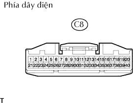

HỆ THỐNG TÚI KHÍ > Đèn báo SRS không sáng |
| 1.KIỂM TRA SỰ NỐI CÁC GIẮC |
Tháo cáp ra khỏi cực âm (-) ắc quy và đợi trong ít nhất 90 giây.
Kiểm tra rằng các giắc nối được nối chắc vào cảm biến túi khí trung tâm và cụm đồng hồ táplô.
|
| ||||
| OK | |
| 2.KIỂM TRA CỤM ĐỒNG HỒ TÁP LÔ |
|  |
Tháo giắc C8 của đồng hồ.
Bật khoá điện ON.
Đo điện áp của giắc nối phía dây điện.
| Nối dụng cụ đo | Điều kiện tiêu chuẩn |
| C8-21 - Mát thân xe | 8 đến 14 V |
|
| ||||
| OK | |
| 3.KIỂM TRA HOẠT ĐỘNG CỦA ĐÈN BÁO SRS |
Tháo giắc A14 của ECU với giắc giắc đồng hồ C8 vẫn được nối.
Bật khoá điện ON.
Kiểm tra rằng đèn báo sáng lên 10 giây sau khi bật khóa điện ON.
|
| ||||
| OK | |
| 4.THAY THẾ CỤM CẢM BIẾN TÚI KHÍ TRUNG TÂM |
Thay cảm biến túi khí trung tâm.
Kiểm tra rằng đèn báo SRS sáng bình thường.
|
| ||||
| OK | ||
| ||